<!DOCTYPE html>
<html lang="zh-cn">
<head>
	<meta charset="UTF-8">
	<meta http-equiv="X-UA-Compatible" content="IE=edge,chrome=1">
	<link rel="icon" href="../../../img/aliyun.svg" />
	<title>混合云-阿里云</title>
	<script type="text/javascript" src="../../../js/head.js"></script>
	<script type="text/javascript">
		window.onload = createNavigation(aliyun);
	</script>
</head>
<body>
	<div class="container-fluid">
		<div id="divCommand">
			<script type="text/javascript">
				createInstruT0("专用网络（VPC）", "i1");
					createInstruT1("VPC对等连接", "i1-3");
						createConfigImgT1("i1_3$1~7");

					createInstruT1("云企业网（CEN）", "i1-4");
						createConfigImgT1("i1_4$1~12");

					createInstruT1("VPC地址冲突，方案1：私网连接", "i1-5");
						createInstruT2("私网连接方案说明", "i1-5-1");
							const private_link = `
								<div class="divConfigImgT2" style="margin-top: -15px;background-color: #FFFFFF;width: 975px">
									
								</div>
							`
							document.write(private_link);

							createInstruAllTopT2("<br />如图所示，VPC1和VPC2的子网冲突，VPC1 需要访问 VPC2中ECS 提供的服务");

							createInstruAllTopT2("由于地址冲突，无法直接访问，实现访问原理为，先创建负载均衡器，关联 VPC2 的服务，然后通过相应技术配置，使负载均衡器可以被 VPC1 访问");

							createInstruAllTopT2("默认情况下，VPC1访问负载均衡器的方法是访问一个较长的奇怪域名，域名解析对应的地址位于VPC1，由于这个域名访问不便，一般通过配置内网域名，指定一个简单域名的别名记录为那个较长域名");

							createInstruAllTopT2("具体配置步骤如下：");

							createInstruAllTopT2("1、在 VPC2 中创建负载均衡器，关联需要被访问的服务");

							createInstruAllTopT2("2、在 VPC2 中创建终端节点服务，关联访问服务的负载均衡器");

							createInstruAllTopT2("3、在 VPC1 中创建终端节点，关联 VPC2 的终端节点服务");

							createInstruAllTopT2("4、在 VPC1 中创建内网域名，指定一个简单域名的别名记录为终端节点的较长域名");

						createInstruT2("<br />配置传统型负载均衡（CLB）", "i1-5-2");
							createConfigImgT2("i1_5_2$1~13");

						createInstruT2("配置终端节点服务", "i1-5-3");
							createConfigImgT2("i1_5_3$1~3");

						createInstruT2("配置终端节点", "i1-5-4");
							createConfigImgT2("i1_5_4$1~4");

						createInstruT2("配置内网域名", "i1-5-5");
							createConfigImgT2("i1_5_5$1~6");

					createInstruT1("VPC地址冲突，方案2：VPC NAT网关，IP级连接<br />", "i1-6");
						createConfigImgT1("i1_6$1~1");

						createInstruAllTopT1("如图所示，VPC1和VPC2的子网冲突，VPC1 vswitch1中设备通过主动访问10.1.12.101，NAT到访问VPC2 vswitch1中的一台ECS，IP级访问");

						createInstruAllTopT1("VPC1 ECS先通过PAT转换到10.0.11.101，再通过VPC对等连接，访问VPC2的10.0.12.101，最后通过DNAT访问到最终的目的ECS");

						createInstruAllTopT1("配置方式如下：");

						document.writeln("<div style='margin-left: 25px'>");

							createInstruAllTopT1("1、分别在VPC1和VPC2创建两个具体子网不冲突的中转vswitch，并分别手工配置1个用于NAT的地址");

							createInstruAllTopT1("2、分别在各自VPC内创建VPC NAT网关，并配置相应规则，VPC1中配置：将vswitch1的子网SNAT（PAT）到其NAT IP，VPC2配置：将其NAT IP DNAT到需要被访问的ECS IP");

							createInstruAllTopT1("3、分别在各自VPC的默认路由表添加路由，将去往对端中转交换机子网的下一跳指向本端的NAT网关");

							createInstruAllTopT1("4、分别在各自VPC添加一个路由表，并绑定各自的vswitch");

							createInstruAllTopT1("5、分别在各自新路由表中添加路由，去往对端中转vswitch子网的下一跳为VPC对等连接");

						document.writeln("</div>");

				createInstruT0("弹性伸缩", "i2");
					createInstruT1("配置弹性伸缩", "i2-1");
						createInstruT2("配置实例启动模版", "i2-1-1");
							createInstruT3("配置实例启动模版", "i2-1-1-1");
								createConfigImgT3("i2_1_1_1$1~5");

							createInstruT3("模版管理页面入口", "i2-1-1-2");
								createConfigImgT3("i2_1_1_2$1~2");

						createInstruT2("配置弹性伸缩组", "i2-1-2");
							createConfigImgT2("i2_1_1_1$1");
							createConfigImgT2("i2_1_2$1~3");

						createInstruT2("配置弹性伸缩规则", "i2-1-3");
							createConfigImgT2("i2_1_3$1~5");

					createInstruT1("配置负载均衡", "i2-2");
						createInstruT2("配置负载均衡实例", "i2-2-1");
							createConfigImgT2("i2_2_1$1~3");

						createInstruT2("配置服务器组", "i2-2-2");
							createConfigImgT2("i2_2_2$1~5");

						createInstruT2("配置监听", "i2-2-3");
							createConfigImgT2("i2_2_3$1~5");

						createInstruT2("查看服务对应域名", "i2-2-4");
							createInstruAllTopT2("该域名已经无法直接访问，需要将公网域名的别名指向该域名");
							createConfigImgT2("i2_2_4$1");

					createInstruT1("弹性伸缩组关联负载均衡", "i2-3");
						createConfigImgT1("i2_3$1~3");


			</script>
		</div>
	</div>
</body>
</html>